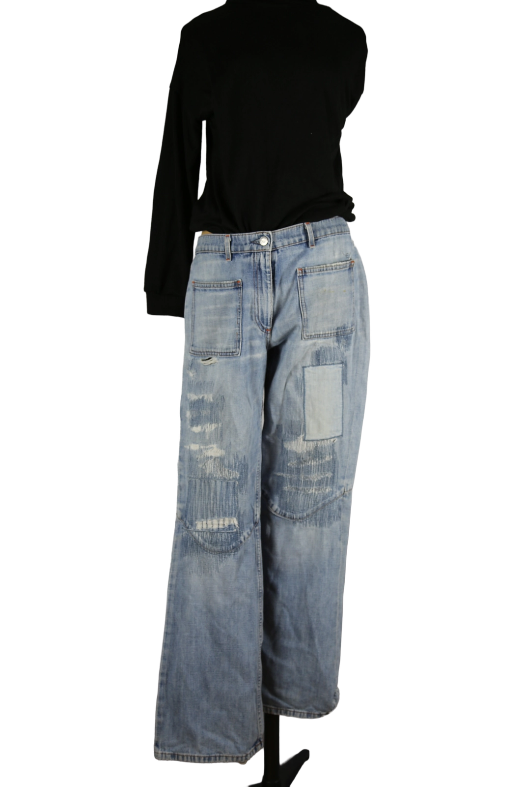

1 / 5Walter Van Beirendonck Hose Patchwork – Hosen. Aus dem kuratierten Archiv von Disorder119.
Dieses Stück ist bereits verkauft und bleibt als Teil des Disorder119-Archivs sichtbar.
Disorder119 · Kuratiertes Archiv für Designer-, Vintage- und Contemporary-Mode. Jedes Stück wird einzeln ausgewählt, fotografiert und beschrieben.